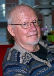
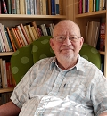
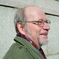
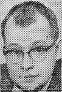
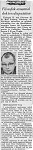
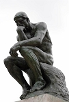

"Filosofigeni" Mats Erland Furberg
Professor (1981-1998) emeritus i teoretisk filosofi vid Göteborgs univ..
| Född: | 1933-04-25 Göteborg, Oskar Fredriks fs, Göteborgs stad. [1] |
|---|
| Vigsel: | 1987-12-19. [2] |
|---|
| Levde: | 1991 Götag 16, Alingsås, Alingsås fs, Alingsås kn. [2] |
|---|
Noteringar
Mats Furberg, född 1933, är professor (1981-1998) emeritus i teoretisk filosofi i Göteborg.
Furberg studerade i Oxford under Gilbert Ryle och J.L. Austin. I den senares efterföljd fullföljdes studier i talaktsteori som resulterade i avhandlingen Locutionary and illocutionary acts, 1963, senare utgiven som: Saying and meaning.
Fortsatt forskning i talaktsteori ledde till boken Säga, förstå, tolka. Temat om tolkning resulterade i boken Verstehen och förstå, där Furberg går igenom begreppet ”förstå” mot bakgrund av vad Dilthey, Heidegger och Gadamer har sagt i frågan. I den populärt hållna Språk och påverkan, 1966, går han igenom olika språkteorier och dess förklaringar av bl.a. språkets emotiva kraft.
I boken Allting en trasa? forskar Furberg kring tankar om livets mening. Furbergs intresse för språk och humaniora och rötterna i den brittiska analytiska traditionen, har lett till en rad böcker under 90-talet. Nedom vara och böra, där Humes ”klyfta ”mellan ”är” och ”bör”, undersöks. Istället för vetande? Där den sene Wittgensteins tankar om visshet och vetande undersöks. Boken Du utgör en fenomenologisk undersökning av ”Jag och du”-relationens unicitet, delvis i polemik mot Martin Bubers tankar. Boken Den förste stenen, fortsätter det fenomenologiska spåret, vilket underrubriken pekar på; en moralitetsfenomenologisk undersökning.
Bibliografi i urval
Språk och påverkan (medförfattare; Jan Andersson), Doxa, 1972
Allting en trasa? Doxa, 1975
Säga, förstå, tolka, Doxa, 1982
Bara leva: filosofiska försök 1988
Nedom vara och böra? Nya Doxa, 1993
I stället för vetande, Thales, 1994
Du, Thales, 1998
Den första stenen, Daidalos, 1999
Jesu barnbarn. En väg till filosofin, Thales, 2013
Källor
Filosofilexikonet, Forum
______________________________________________
SAKPROSA
MATS FURBERG
"Jesu barnbarn. En väg till filosofin."
Thales, 142 s.
Filosofigeni
Mats Furberg, som nu kommer med sin självbiografi, är en av Sveriges få filosofer.
Lars Gustafsson gläds åt en mästerligt skildrad intellektuell utvecklingshistoria. Bland de kringresande varietéartister som ännu vid 1950-talets slut brukade slå upp sina tält på Fiskartorget i Västerås, fanns det hypnotisörer, en gentleman som kunde göra sig osynlig, en annan som lät sig skjutas över torget som artilleriprojektil, en stark man som kunde riva telefonkatalogen i två delar med ett raskt grepp.
Och där fanns en utbrytarkung - en man som omsorgsfullt lindades in i rejäla kedjor som låstes ihop med solida hänglås där en i publiken fick förvalta nyckeln. Ljuset släcktes i salongen. Och när det åter tändes stod mannen där frisk och fri och upprest från sin stol. Vid läsningen av Mats Furbergs lysande intellektuella sjävbiografi "Jesu barnbarn. En väg till filosofin" har jag gång på gång återkommit till detta minne. Efter sju decenniers umgänge med böcker och deras författare har jag naturligtvis också mött alla de andra artisterna och deras konster. Men med utbrytarkungen är det ändå något speciellt.
I en generation där praktiskt taget varje innehavare av ett ordbehandlingsprogram ger ut sin självbiografi och där det som regel lönar sig att hoppa över ett par hundra sidor av namedropping, totalt bortglömda kommittéuppdrag och ointressanta utlandsvistelser, har Furberg åstadkommit något mycket sällsynt, nästan ett litet underverk: en skildring av ett liv och en intellektuell utveckling bestående av 142 kvartosidor glasklar, utsökt vårdad, prosa.
Furberg är en av Sveriges mycket få filosofer, skolad hos stora män som Ivar Segelberg i Göteborg och den alldeles för tidigt bortgångne J L Austin i Oxford, språkaktsemantikens ledare.
Vi har många filosofiprofessorer och de är viktiga och mycket samhällsnyttiga. Vi kunde gott ha fler. Men filosofer är inte riktigt detsamma. Några av dem - som Furberg och hans lärare - är professorer. Men det har inte mycket med saken att göra. Jag misstänker att andra filosofer sover på tunnelbanors ventilationsgaller och dör tidigt som Austin. För att bli filosof i ordets strikta mening fordras en viss förmåga att just - ta sig ut.
Jag blir ofta förvånad när jag läser generationskamraters minnen - Enquist, Furberg - över vilket enormt kvävande inflytande en kristen uppfostran tycks ha haft över dem. Hos Enquist, med sitt milda temperament, tar det sig uttryck i ett grubblande som inte vill ta slut. Hos den mycket piggare Furberg i öppet hat mot denne Jesus och hans obehagliga förbannelser i Matteusevangeliet, hans groteska anspråk och framför allt vad Furberg kallar "det kyrkliga". Som - heter det; "kletade, kallt och slemmigt, liksom den gud som inte fanns". (Jag undrar ibland hur jag själv fullständigt undgick detta; jag tror att det var den tidiga kontakten med Nathan Söderbloms "Främmande religionsurkunder". Den religiösa erfarenheten - en realitet - var något helt annat än inskränkta trosläror.)
Från frikyrkligheten hamnade många i nya dogmer. I Uppsala och Lund, men kanske inte Göteborg, där vi lät oss vägledas av Hedenius "Tro och vetande" och Ayers "Language, truth and logic" mötte nya konstigheter att ta sig ur.
Kaffekoppar är logiska konstruktioner av sinnesdata och ingenting annat. (Det var värst: logiska
konstruktioner kan tydligen gå sönder om man tappar dem) Värdeomdömen är ateoretiska känslouttryck. (Jaha - så det är en smaksak om man bör bränna sin grannes ännu obetalda bil eller inte?) Påståenden om fiktiva objekt är alltid falska. (Jaha. Så det är inte sant att Clark Kent är Stålmannen! Och Madame Bovary är en mustaschprydd herre?)
Oxfordfilosoferna satte både Furberg och andra på nya spår. Vi förstod att Sartre och Camus kanske inte heller var så dumma och att antagandet att det finns ett etiskt rum där alla människor befinner sig, kan berika filosofin. Om detta rum handlar en stor del av Furbergs djupa, envisa tänkande, dokumenterat i band efter band på Sveriges vitalaste filosofprosa.
"Jesu barnbarn" är som en lösning som har stått så länge att alla sediment har fallit till botten. Och vad som återstår är en kristalliskt klarnad vätska. Denna bok är född klassiker.
Av Lars Gustafsson
kulturen@expressen.se
Publicerad 29 jul 2013 08:37 www.expressen.se/kultur/filosofigeni/
______________________________________________
Mats Furberg och filosofi
2013-08-07
Lars Gustafsson recenserades Mats Furbergs memoarer i Expressen (29 juli). Det finns filosofprofessorer och de är mycket nyttiga, resonerade Gustafsson. Men det finns också verkliga filosofer som Mats Furberg och de är mer sällsynta. Avgör Gustafsson med snabb och summarisk säkerhet.
Vad är skillnaden mellan en filosof och en filosofiprofessor? Vad höjer en människa från en enkel filosofiprofessor till en verklig filosof? Det förefaller som Lars Gustafsson menade förmåga till självständigt tänkande.
Det kan ha något att göra med att Mats Furberg kommer från Göteborg. I Lund och Uppsala var vi nog mer dogmatiska, säger Gustafsson självkritiskt. Det är riktigt, de analytiska filosoferna bildade en skarpsinning och enhetlig skara. Konflikter fanns, men tycktes mig mest handla om att vara duktigast, mest skarpsinnig - grundhållningen var hela tiden densamma. Idéerna kom från Uppsala, Hedenii docent Sören Halldén hade blivit professor i Lund. I Uppsala satt Hedenius och Konrad Marc-Wogau, i Stockholm Anders Wedberg. Hägerströms och Phaléns barn och barnbarn.
Men i Göteborg satt Ivar Segelberg och ansågs vara en kuf. Mats Furberg, som var engelsk skolad, skrev briljanta populärfilosofiska böcker. Hans lärare, J.L. Austin lyckades jag aldrig förstå, men Furbergs egna böcker var lättillgängliga, kloka, pedagogiska och roliga. Och mycket allvarliga. ”Tankar om döden” är en mycket depressiv och mycket klok bok.
Jag gick och lyssnade på Mats Furberg när han besökte Lund. Jag hade väntat mig en lugn, dyster, resignerad man, långsam och lite apatisk. Men han darrade och skalv som ett asplöv. Hans dysterhet var påfallande nervös, han tedde sig som en figur hos Dostojevskij. Vid detta tillfälle.
Min beundran för mina lärare på Filosoficum i Lund var gränslös. Min frånvaro av opposition berodde på min starka identifikation. Det fanns inget skäl att opponera mot dem, de gav i stället verktyg att begagna i den utomfilosofiska världen. Där lögn och subjektivitet och godtycke härskade. Där eleganta fraser, och akademisk och publicistisk uppblåsthet, förpestar livet.
Därför tyckte jag sällan det var angeläget att ta ställning i filosofernas interna strider. Jag kände mig inte heller kapabel till det. Varför bemöta skarpsinne med ännu större skarpsinne? Varför inte i stället använda skarpsinnet mot den destruktiva dumheten?
Därför har jag lite svårt att se vad en självständig analytisk filosof är. Är det ens eftersträvansvärt? Kanske är mitt problem här att jag inte riktigt är på den filosofiska nivån att jag kan se vad som är radikalt nytt. Och att jag inte riktigt kan skilja det radikalt nya från det som bara är ännu en subtilitet.
Gustafsson raljerar lite lättköpt med analytiska tankefigurer, som tycks honom strida mot common sense. Men det är förstås bara försök att hitta exaktare formuleringar, som möjliggör exaktare resonemang, än vardagsspråket har behov av. Filosofisk missbruk blir det först när man ställer vetenskapliga krav på vardagsspråket. Ett enkel sätt att framstå som skarpsinnig. Tro mig, jag har begått många sådana ungdomssynder.
7 aug 2013
Lars Westerbergs Blogg
larswesterberg.bloggo.nu/Mats-Furberg-och-filosofi/
Personhistoria
| Årtal | Ålder | Händelse |
|---|
| 1933 |
|
Födelse 1933-04-25 Göteborg, Oskar Fredriks fs, Göteborgs stad [1] |
| 1944 |
|
Makan Ulla Margareta Holm föds 1944 [2] |
| 1958 |
24 år |
Modern Kristina (Kerstin) Konstantia Vidman dör 1958-02-26 Göteborg, Amerikag 2, Masthuggs fs, Göteborgs kn [3] |
| 1971 |
37 år |
Fadern Karl Georg Furberg dör 1971-01-03 Göteborg, Kungsladugårdsg 29, Karl Johans fs, Göteborgs kn [4] |
| 1987 |
54 år |
Vigsel Ulla Margareta Holm 1987-12-19 [2] |
| 1991 |
|
Levde Ulla Margareta Holm 1991 Götag 16, Alingsås, Alingsås fs, Alingsås kn [2] |
Dokument
Källor
| [1] | SCB Födda Göteborgs Oskar Fredrik 93/1933 |
| |
| | |
| [2] | Mantalslängd 1991, Älvsborgs län |
| |
| | |
| [3] | DOR 52-60 / PA, DB |
| |
| | |
| [4] | MTL 71 / RTB 71 / RTBd 71 / UTD 71d |
| |
|
|  |
| 2015. Mats Furberg |
| |
|  |
| 2015. Mats Furberg |
| |
|  |
| 2012. Mats Furberg |
| |
|  |
| 1963. Mats Furberg studerade i Oxford under Gilbert Ryle och J.L. Austin. I den senares efterföljd fullföljdes studier i talaktsteori som resulterade i avhandlingen Locutionary and illocutionary acts, 1963, senare utgiven som: Saying and meaning. |
| |
|  |
| 1963. Artikeln är från Göteborgs Handels och Sjöfartstidning där han också skrev om filosofi ibland. Med tack till kusinen Anders Widman i Gävle. |
| |
|  |
| Tänkvärt. För att bli filosof krävs en förmåga att röra sig utanför det akademiska. Auguste Rodins skulptur "Tänkaren". |
|
{kind=link}
{kind=link}
{kind=link}
{kind=link}
{kind=link}
{kind=link}